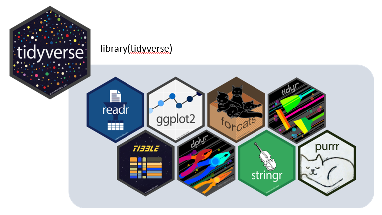
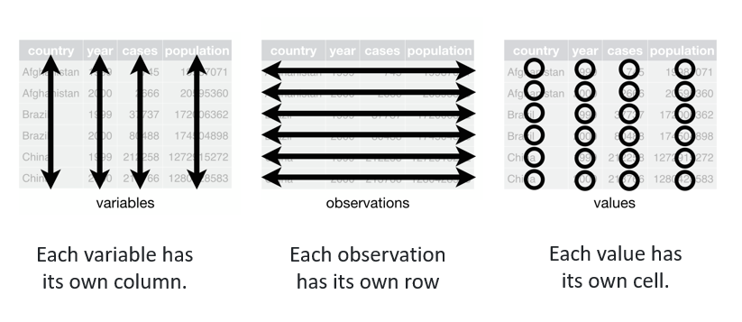
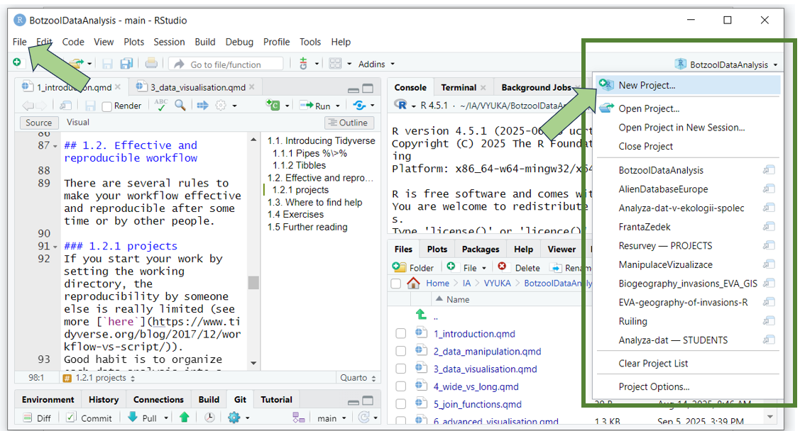

library(tidyverse)1 Introduction
In this chapter, we will train how to get ready for analyses in R. Preparing the project, starting a script, importing data and their first exploration. We will follow the rules for preparing reproducible, reportable, clean and tidy workflow and scripts.
You already know that R is a programming language and environment for statistical analysis and data visualisation. R is free and open-source, available from the CRAN directory. R is extended by a large number of software packages, which contain reusable code, documentation, and sample data. In this course, we will focus in the first place on the tidyverse collection of packages, which are designed for everyday data handling and visualisation (see more here).
We will work with R using the interface called RStudio IDE, in short RStudio, which is an integrated development environment for R and can be downloaded here.
TO DO: install R, RStudio and tidyverse package. Having trouble and need advice? Try further reading section at the end of this chapter or come and ask before the first lesson.
1.1. Introducing Tidyverse

Tidyverse is a collection of R packages for transforming and visualizing data, which share an underlying philosophy (tidy data, tibbles, %>%) and common interface. When you install the tidyverse, you get all the core packages at once, namely
readrfor data importing
dplyrwith tools for data manipulation (e.g. select, filter, arrange, mutate…)tidyrwith functions that help you get to tidy data and transform their format (e.g.pivot)tibbleintroducing simple dataframes called tibblesggplot2package for data visualisationstringrfor working with strings, matching defined patterns, clean unwanted partsforcatswhich enables easier work with factorslubridatehelping to work with date-timespurrwhich offers complete and consistent set of tools for working with functions and vectors, introduces map function instead of complicated loops
In addition you get automatically installed also several more packages, which share the same approach, although developed later or by someone else, for example - readxl elegant direct import from Excel files - magrittrpackage where the pipe was originally introduced, including double-sided pipe
Find more about tidyverse here or check cheatsheets and vignettes for individual packages.
Remember, that all the core packages are activated within the tidyverse library
while for the extra ones you have to use an extra call
library(readxl)1.1.1 Tidy data
Data that are easy to handle and analyse. 
Find more in the R for data science book https://r4ds.hadley.nz/
1.1.2 Tibbles
Tibbles are new, updated versions of base-R data frames. They are designed to work better with other tidyverse packages. In contrast to data frames, tibbles never convert the type of the inputs (e.g. strings to factors), they never change the names of variables, and they never create row names. Example:
data <- read_excel("data/forest_understory/Axmanova-Forest-understory-diversity-analyses.xlsx")
tibble (data)# A tibble: 65 × 22
PlotID ForestType ForestTypeName Herbs Juveniles CoverE1 Biomass
<dbl> <dbl> <chr> <dbl> <dbl> <dbl> <dbl>
1 1 2 oak hornbeam forest 26 12 20 12.8
2 2 1 oak forest 13 3 25 9.9
3 3 1 oak forest 14 1 25 15.2
4 4 1 oak forest 15 5 30 16
5 5 1 oak forest 13 1 35 20.7
6 6 1 oak forest 16 3 60 46.4
7 7 1 oak forest 17 5 70 49.2
8 8 2 oak hornbeam forest 21 1 70 48.7
9 9 2 oak hornbeam forest 15 4 15 13.8
10 10 1 oak forest 14 4 75 79.1
# ℹ 55 more rows
# ℹ 15 more variables: Soil_depth_categ <dbl>, pH_KCl <dbl>, Slope <dbl>,
# Altitude <dbl>, Canopy_E3 <dbl>, Radiation <dbl>, Heat <dbl>,
# TransDir <dbl>, TransDif <dbl>, TransTot <dbl>, EIV_light <dbl>,
# EIV_moisture <dbl>, EIV_soilreaction <dbl>, EIV_nutrients <dbl>, TWI <dbl>1.1.3 Pipes %>%
The Tidyverse tools use a pipe: %>% or |> The pipe allows the output of a previous command to be used as input to another command instead of using nested functions. It means, pipe binds individual steps into a sequence and it reads from left to right. In base R the logic of reading is from inside out and you have to save all the steps separately.
See this example of the same steps with different approaches>
Base R method
data <- read_excel("data/forest_understory/Axmanova-Forest-understory-diversity-analyses.xlsx")
# 1. Create new variable in the data
data$Productivity <- ifelse(data$Biomass < 60, "low", "high")
# 2. Select only some columns, save as new dataframe
df <- data[, c("PlotID", "ForestTypeName", "Productivity", "pH_KCl")]
# 3. Order by soil pH (descending)
df <- df[order(df$pH_KCl, decreasing = TRUE), ]
# 4. Keep only the first 15 rows with highest pH
df_top20 <- df[1:15, ]
# 5. Print the resulting subset to see which forest types grow in the high pH soils and if they have rather low or high productivity
df_top20# A tibble: 15 × 4
PlotID ForestTypeName Productivity pH_KCl
<dbl> <chr> <chr> <dbl>
1 104 alluvial forest high 7.14
2 103 alluvial forest high 7.13
3 128 ravine forest high 7.03
4 111 alluvial forest high 7.01
5 114 ravine forest high 6.93
6 123 ravine forest low 6.91
7 105 ravine forest high 6.78
8 122 ravine forest high 6.68
9 101 alluvial forest high 6.67
10 119 oak hornbeam forest low 6.63
11 113 alluvial forest high 6.61
12 120 oak hornbeam forest high 6.42
13 115 ravine forest low 6.03
14 110 alluvial forest high 5.82
15 121 oak hornbeam forest high 5.77Piping (the same steps, but just in one line)
data <- read_excel("data/forest_understory/Axmanova-Forest-understory-diversity-analyses.xlsx") %>%
mutate(Productivity = ifelse(Biomass < 100, "low", "high")) %>%
select(PlotID, ForestTypeName, Productivity, pH_KCl) %>%
arrange(desc(pH_KCl)) %>%
slice_head(n = 15) %>%
print()# A tibble: 15 × 4
PlotID ForestTypeName Productivity pH_KCl
<dbl> <chr> <chr> <dbl>
1 104 alluvial forest high 7.14
2 103 alluvial forest high 7.13
3 128 ravine forest high 7.03
4 111 alluvial forest low 7.01
5 114 ravine forest low 6.93
6 123 ravine forest low 6.91
7 105 ravine forest low 6.78
8 122 ravine forest high 6.68
9 101 alluvial forest low 6.67
10 119 oak hornbeam forest low 6.63
11 113 alluvial forest low 6.61
12 120 oak hornbeam forest low 6.42
13 115 ravine forest low 6.03
14 110 alluvial forest high 5.82
15 121 oak hornbeam forest low 5.77Note: It is even possible to overwrite original dataset with an assignment pipe %<>% included in magrittr package. We will try to avoid this in our lessons, as it cannot be undone.
Tip: Insert a pipe by ctrl+shift+M
1.2. Effective and reproducible workflow
There are several rules to make your workflow effective and reproducible after some time or by other people.
1.2.1 Projects
If you start your work by setting the working directory, the reproducibility by someone else is very limited (see more here). Good habit is to organize each data analysis into a project: a folder on your computer that holds all the files relevant to that particular piece of work.
R Studio easily enables creating projects and switching between them (either through File-Open/New/Recent Project or by clicking on the upper right corner icon for projects). 
Tip: get used to creating the same subfolders in each of your project: data, scripts, results, maps, backup etc. to further organise the project structure. If you save the data into them, you can directly import them, see them through the project in R studio.
1.2.2 Scripts
- libraries - list all the libraries your code need at the beginning of the script
library(tidyverse)
library(readxl)- remarks
- add notes to your scripts, you will be grateful later
- change the text to non-active (marked with hash tags #) ctrl + shift + C
- separate scripts or sections
- insert named section using ctrl + shift + R
- or divide the code by ####
- fold all sections with Alt + O
- unfold all with Shift + Alt + O
- names of variables
- should be short and easy to handle, without spaces, strange symbols Simple variable names will save you really so much time and parentheses !
See this example
data <- read_csv("data/messy_data/Example0.csv")
names(data)[1] "Relevé number" "Taxon"
[3] "Vegetation layer" "Cover %"
[5] "Braun-Blanquet Scale (New) Code"You can rename strange names one by one. First use the new name and put the old one on the right like here.
data %>% rename (Releve = "Relevé number")# A tibble: 51 × 5
Releve Taxon `Vegetation layer` `Cover %` Braun-Blanquet Scale…¹
<dbl> <chr> <dbl> <dbl> <chr>
1 435469 Ribes uva-crispa 0 2 +
2 435469 Ulmus minor 0 3 1
3 435469 Crataegus monogyn… 0 2 +
4 435469 Rubus caesius 0 13 a
5 435469 Prunus padus ssp.… 0 3 1
6 435469 Populus alba 0 13 a
7 435469 Fraxinus excelsior 0 68 4
8 435469 Arctium lappa 6 1 r
9 435469 Adoxa moschatelli… 6 2 +
10 435469 Aegopodium podagr… 6 13 a
# ℹ 41 more rows
# ℹ abbreviated name: ¹`Braun-Blanquet Scale (New) Code`Or you can change all difficult patterns at once, using RegEx Regular expressions. Import the example once again.
You identify the pattern on left, starting with two backslashes and define the outcome on right side. Be sure to keep the logic in your sequence - what is first and what last, as it really changes the patterns one by one, as they are listed.
data <- read_csv("data/messy_data/Example0.csv")
names(data)[1] "Relevé number" "Taxon"
[3] "Vegetation layer" "Cover %"
[5] "Braun-Blanquet Scale (New) Code"data %>%
rename_all(~ str_replace_all(., c(
"\\." = "", # remove dots in the variable names
"\\é" = "e", # replace é by e
"\\%" = "perc", # remove symbol % and change it to perc
"\\(" = "", # remove brackets
"\\)" = "", # remove brackets
"\\/" = "", # remove slash
"\\?" = "", # remove questionmark
"\\s" = "."))) # remove spaces# A tibble: 51 × 5
Releve.number Taxon Vegetation.layer Cover.perc Braun-Blanquet.Scale…¹
<dbl> <chr> <dbl> <dbl> <chr>
1 435469 Ribes uva-c… 0 2 +
2 435469 Ulmus minor 0 3 1
3 435469 Crataegus m… 0 2 +
4 435469 Rubus caesi… 0 13 a
5 435469 Prunus padu… 0 3 1
6 435469 Populus alba 0 13 a
7 435469 Fraxinus ex… 0 68 4
8 435469 Arctium lap… 6 1 r
9 435469 Adoxa mosch… 6 2 +
10 435469 Aegopodium … 6 13 a
# ℹ 41 more rows
# ℹ abbreviated name: ¹`Braun-Blanquet.Scale.New.Code`Now check the names again. Did it work?
- Tip: use the function clean_names from package janitor
Note that in the examples above you are not really rewriting the data you have imported. Here the “data %>%” means, that you are just trying how it would look like if you apply the following steps to data. To really change it you would have to assign your result into a new dataset, by using following options:
data2<- data1 %>% … #defining first the new dataset
data<-data %>% … #rewriting the existing dataset
data %<>% data … #rewriting the existing dataset by assignment pipe (magrittr)
data1 %>% …->data2 #making/testing all the steps and assigning it to new dataset as the last step
This might sound troublesome, but it is actually very helpful. You can try all the steps and when you are happy with the code, you can put everything into one pipe line from import of the data to export of the result.
1.3 Data import
We will train how to import data with Tidyverse, which means readr or readxl in case of Excel files (see cheatsheet)
What is useful is to check which files are stored in the folders we have. Here we list all files in the working=project directory
list.files() [1] "1_introduction.qmd" "1_introduction.rmarkdown"
[3] "11_database_to_plot.html" "11_database_to_plot.qmd"
[5] "12_github.html" "12_github.qmd"
[7] "2_data_manipulation.qmd" "3_data_visualisation.qmd"
[9] "4_wide_vs_long.qmd" "5_join_functions.qmd"
[11] "6_advanced_visualisation.qmd" "7_8_automatisation.qmd"
[13] "9_10_maps.qmd" "data"
[15] "data_manipulation_visualisation.qmd" "exercisesIA"
[17] "images" "plots"
[19] "scripts" Or we can dive deeper in the hierarchy and check content of data folder, or specific subfolder
list.files("data") [1] "acidophilous_grasslands" "basiphilous_grasslands"
[3] "forest_understory" "frozen_fauna"
[5] "gapminder" "gapminder_clean"
[7] "gapminder_continent" "messy_data"
[9] "sands" list.files("data/forest_understory")[1] "Axmanova-Forest-env.xlsx"
[2] "Axmanova-Forest-spe.xlsx"
[3] "Axmanova-Forest-understory-diversity-analyses.xlsx"
[4] "Axmanova-Forest-understory-diversity-merged-long.xlsx"
[5] "readme.txt"
[6] "traits.xlsx" Let’s select one of the files and import it into our working environment. Depending on the type of file I have to select the right approach. Here it is an Excel file, so I can use function read_excel. Check the cheatsheet for more tips.
data <- read_excel("data/forest_understory/Axmanova-Forest-understory-diversity-analyses.xlsx")We imported the data and here are a few tips how to check the structure
First is the tibble, which actually appears automatically after any import using tidyverse approach - note that only ten rows and several variables are shown, if there are too many, rest is listed below.
tibble(data)# A tibble: 65 × 22
PlotID ForestType ForestTypeName Herbs Juveniles CoverE1 Biomass
<dbl> <dbl> <chr> <dbl> <dbl> <dbl> <dbl>
1 1 2 oak hornbeam forest 26 12 20 12.8
2 2 1 oak forest 13 3 25 9.9
3 3 1 oak forest 14 1 25 15.2
4 4 1 oak forest 15 5 30 16
5 5 1 oak forest 13 1 35 20.7
6 6 1 oak forest 16 3 60 46.4
7 7 1 oak forest 17 5 70 49.2
8 8 2 oak hornbeam forest 21 1 70 48.7
9 9 2 oak hornbeam forest 15 4 15 13.8
10 10 1 oak forest 14 4 75 79.1
# ℹ 55 more rows
# ℹ 15 more variables: Soil_depth_categ <dbl>, pH_KCl <dbl>, Slope <dbl>,
# Altitude <dbl>, Canopy_E3 <dbl>, Radiation <dbl>, Heat <dbl>,
# TransDir <dbl>, TransDif <dbl>, TransTot <dbl>, EIV_light <dbl>,
# EIV_moisture <dbl>, EIV_soilreaction <dbl>, EIV_nutrients <dbl>, TWI <dbl>alternative way is to use glimpse, where the variables are listed below each other, showing the first 15 values
glimpse(data)Rows: 65
Columns: 22
$ PlotID <dbl> 1, 2, 3, 4, 5, 6, 7, 8, 9, 10, 11, 14, 16, 18, 28, 29…
$ ForestType <dbl> 2, 1, 1, 1, 1, 1, 1, 2, 2, 1, 1, 2, 2, 2, 1, 2, 1, 2,…
$ ForestTypeName <chr> "oak hornbeam forest", "oak forest", "oak forest", "o…
$ Herbs <dbl> 26, 13, 14, 15, 13, 16, 17, 21, 15, 14, 12, 30, 24, 1…
$ Juveniles <dbl> 12, 3, 1, 5, 1, 3, 5, 1, 4, 4, 4, 3, 7, 3, 1, 2, 2, 7…
$ CoverE1 <dbl> 20, 25, 25, 30, 35, 60, 70, 70, 15, 75, 8, 30, 60, 85…
$ Biomass <dbl> 12.8, 9.9, 15.2, 16.0, 20.7, 46.4, 49.2, 48.7, 13.8, …
$ Soil_depth_categ <dbl> 5.0, 4.5, 3.0, 3.0, 3.0, 6.0, 7.0, 5.0, 3.5, 5.0, 2.0…
$ pH_KCl <dbl> 5.28, 3.24, 4.01, 3.77, 3.50, 3.80, 3.48, 3.68, 4.24,…
$ Slope <dbl> 4, 24, 13, 21, 0, 10, 6, 0, 38, 13, 29, 47, 33, 24, 0…
$ Altitude <dbl> 412, 458, 414, 379, 374, 380, 373, 390, 255, 340, 368…
$ Canopy_E3 <dbl> 80, 80, 80, 75, 70, 65, 65, 85, 80, 70, 85, 60, 75, 7…
$ Radiation <dbl> 0.8813, 0.9329, 0.9161, 0.9305, 0.8691, 0.9178, 0.829…
$ Heat <dbl> 0.8575, 0.8138, 0.8503, 0.9477, 0.8691, 0.8834, 0.803…
$ TransDir <dbl> 3.72, 4.05, 4.38, 3.48, 3.73, 3.59, 4.49, 3.97, 3.61,…
$ TransDif <dbl> 2.83, 2.83, 2.94, 2.96, 3.15, 3.40, 2.87, 2.99, 2.92,…
$ TransTot <dbl> 6.55, 6.88, 7.31, 6.44, 6.88, 6.99, 7.36, 6.96, 6.53,…
$ EIV_light <dbl> 5.00, 4.71, 4.36, 5.26, 6.14, 6.19, 6.19, 5.29, 5.47,…
$ EIV_moisture <dbl> 4.38, 4.64, 4.70, 4.38, 4.00, 4.35, 4.25, 4.60, 4.36,…
$ EIV_soilreaction <dbl> 6.68, 4.67, 4.80, 5.53, 5.33, 6.75, 6.09, 5.07, 5.46,…
$ EIV_nutrients <dbl> 4.31, 3.69, 3.55, 3.56, 3.46, 5.06, 4.33, 4.12, 3.50,…
$ TWI <dbl> 3.353962, 2.419177, 2.159580, 1.651170, 4.741780, 2.4…if you forget the names of variables or you want to copy them and store in your script, use simple names
names(data) [1] "PlotID" "ForestType" "ForestTypeName" "Herbs"
[5] "Juveniles" "CoverE1" "Biomass" "Soil_depth_categ"
[9] "pH_KCl" "Slope" "Altitude" "Canopy_E3"
[13] "Radiation" "Heat" "TransDir" "TransDif"
[17] "TransTot" "EIV_light" "EIV_moisture" "EIV_soilreaction"
[21] "EIV_nutrients" "TWI" Quite useful baseR approach function is table, which shows the counts per categories of selected variable. In tidyverse it will need more steps to be done, but we will get there next time…
table(data$ForestTypeName)
alluvial forest oak forest oak hornbeam forest ravine forest
11 16 28 10 Of course, you can also view() the data or click on it in the list in the Files to open it in a table-like scrolable format, which can be useful many times. However, this is not recommended with huge tables, as the previews are rather memory demanding.
1.4 Where to find help
Motto: Majority of the problems in R can be solved if you know how to ask and where.
Knowing that I am lost in “Regular expressions” already helps to ask more specifically.
R studio help Try intergrated help in R studio, where you can find links to selected manuals, cheat sheets. It is the place where you can also find Keyboard shortcuts help to find out which combinations do what. e.g. shift+ctrl+m
Cheatsheets - the most important features of a given package summarised at two A4 pages, ready to print
Vignettes are supporting documents that are available for many packages. They give examples and explain functions available in the package. You can discover vignettes by accessing the help page for a package, or via the browseVignettes() function, which will get you to the overall list. Or you can just try by typing specific names e.g. vignette(“dplyr”)
[R studio community] (https://forum.posit.co/) Questions sorted by packages, nice to check when looking for frequently asked questions.
Stack Overflow. You probably already came across Stack Overflow if you were trying to Google something, as it suggests answers to coding related questions. It is a good environment to ask questions or try to find if somebody already asked the same things before. Be specific about the coding style. E.g. How to separate variable using tidyverse?
GitHub is a great source - you can find there data, projects, packages, instructions. If you stay till the end of this course we will show you more.
AI tools are worth to ask. For example (i), you have a code and you do not understand it, so you can ask for explanation, or (ii) you want to get the code translated to another syntax (e.g. from base R to tidyverse), (iii) or you want to know how to code something but you do not have a clue which packages to use… We will train this a bit.
Or just come and ask!
1.5 Exercises
For exercises we will use either data that are published somewhere and give you the link, or we will ask you to download the data from the repository and save it into your project folder Link to Github folder
There will be some obligatory tasks, while voluntarily tasks will be marked by *.
In this chapter:
1. Create project for this lesson, add subfolders (data, scripts..), download the data from the folder Forest_understory, and store them in the folder “data” within your project. Import file called Axmanova-Forest-understory-diversity-analyses.xlsx into the working environment and check the structure. Prepare script with your notes, separated into sections.
2. Create another project and start a new script, try switching between the projects. Delete this project.
3. Find a cheatsheet for readxl. Is there anything more then data import from Excel?
4. Use cheatsheet to find out how to import second sheet of Excel file. Try this on import of data/frozen_fauna/metadata. Which sheets are there and can you easily check the structure?
5. Download Example0 from data/messy_data, save them into your data folder and import them to the working environment. Make the dataset tidy by renaming the variable names. Try one by one, or rename_all, or clean_names function from the janitor package. *Save the tidy dataset as Example0_tidy.csv using function write_csv.
6. Try importing the same, not cleaned file via Rstudio and describe pros/cons.
7. *Check the folder messy data, what are the problems in examples1-5? We will learn how to fix them in next chapters directly in R, but can you at least imagine how you would do it in Excel?
8. *Do you know what is reprex and how to prepare it?
1.6 Further reading
RStudio: Download and basic information https://posit.co/download/rstudio-desktop/
David Zelený: Tutorial how to install R and Rstudio https://www.davidzeleny.net/anadat-r/doku.php/en:r
Datacamp: Tutorial for R studio here
Why to organise your work in projects https://www.tidyverse.org/blog/2017/12/workflow-vs-script/
David Zelený clean and tidy script https://davidzeleny.net/wiki/doku.php/recol:clean_and_tidy_script
Tidyverse suggestions to good coding style https://style.tidyverse.org/
R for data science book https://r4ds.hadley.nz/